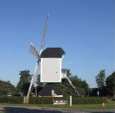

Bergeijk
Vijf weetjes over Bergeijk
- De gemeente Bergeijk heeft 18.754 inwoners
- De gemeente bestaat uit zes kernen
- In 2013 werd Bergeijk uitgeroepen tot "Groenste dorp van Europa"
- Bergeijk is beroemd als Rietvelddorp
- De naam komt voort uit de verering van een eik op een heuvel, een boomheiligdom
Weverij De Ploeg
 Weverij 'de Ploeg' was een weverij te Bergeijk die op idealistische gronden werd opgericht.
De weverij is bekend om haar karakteristieke gordijn-, meubel- en kledingstoffen en het fabrieksgebouw
naar ontwerp van Gerrit Rietveld, met tuinen ontworpen door landschapsarchitect Mien Ruys
Weverij 'de Ploeg' was een weverij te Bergeijk die op idealistische gronden werd opgericht.
De weverij is bekend om haar karakteristieke gordijn-, meubel- en kledingstoffen en het fabrieksgebouw
naar ontwerp van Gerrit Rietveld, met tuinen ontworpen door landschapsarchitect Mien Ruys
De Standerdmolen
 De Standerdmolen in Bergeijk werd gebouwd in 1758. Deze molen heeft een bijzondere historie. De vele inscripties in de molen houden de geschiedenis tot op de dag van vandaag levend. In 1897 sloeg echter de bliksem in. Het grootste deel van de molen brandde toen af. De molen is vervolgens weer opgebouwd en in 1970 grondig gerenoveerd